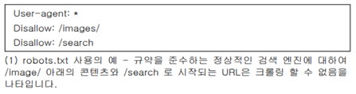
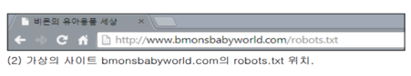
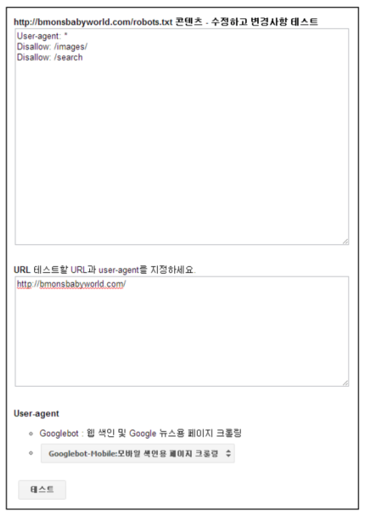
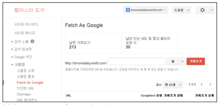

- 검색결과 첫 페이지에 노출될 수 있도록 웹사이트를 개선하는 작업을 의미한다
- title 태그의 콘텐츠는 주로 결과의 첫 번째 행에 나타납니다.
<head> <meta charset=”utf-8”> <title>검색에 노출되는 타이틀 부분</title> </head>
[ title 태그를 위한 피해야 할 사항 ]
- 페이지 내용과 관련이 없는 제목 선택
- "무제문서" 또는 "새 페이지 1" 과 같은 기본 제목이나 모호한 제목 사용
- 사이트의 모든 페이지 또는 대다수의 페이지에 동일한 title 태그 사용
- 사용자에게 도움이 되지 않는 지나치게 긴 제목 사용
- 지나치게 불필요한 키워드를 많이 사용하기
- html의 head 사이에 위치해 있는 태그로, 사이트의 정보를 담는 태그.
<head> <meta name=" " content=" "> </head>
- name 속성 : 메타 태그 타입의 정보
- content 속성 : 메타 태그의 내용
- 웹페이지에 대한 요약된 설명글이며(미리보기), 검색결과에 표시되는 유일한 태그.
<head> <title>검색에 노출되는 타이틀 부분</title> <meta name="description" content="검색엔진 최적화"> </head>
[ description 태그를 위한 피해야 할 사항 ]
- 페이지의 콘텐츠와 관련이 없는 description 메타 태그 작성
- “이것은 웹 페이지입니다” 또는“유아용품에 대한 페이지” 등과 같은 일반적인 설명 사용
- 키워드만의 나열
- description 메타 태그에 문서의 전체 내용을 복사하여 붙여넣음
- 사이트의 모든 페이지 또는 많은 페이지에 동일한 description 메타 태그 사용
- 이 페이지의 메인 키워드가 무엇인지 알려주는 태그.
<head> <title>검색에 노출되는 타이틀 부분</title> <meta name="keywords" content="검색에서 노출되는 키워드부분"> </head>
- 뷰포트 태그는 말 그대로 화면 표시와 관련한 태그로, 최적화된 모바일 페이지를 만들기 위해 많이 이용되는 태그.
<head> <meta name="viewport" content="width=device-width"> </head>
- 앵커 텍스트는 사용자가 링크 결과로 볼 수 있는 클릭 가능한 텍스트이다.
[ <a>태그를 위한 피해야 할 사항 ]
- “페이지”, “문서”, 또는 “여기를 클릭”과 같은 일반적인 앵커 텍스트 사용
- 주제에서 벗어나거나 링크되는 페이지의 콘텐츠와 관련이 없는 텍스트 사용
- 페이지의 URL을 대부분의 앵커 텍스트로 사용 (새로운 웹사이트의 주소를 홍보하거나 참조하는 등의 경우는 예외)
- 긴 문장 또는 짧은 문단 등과 같은 긴 앵커 텍스트 작성
- 링크를 일반 텍스트처럼 보이게 하는 CSS나 텍스트 스타일 사용
- 단지 검색 엔진에 노출되기 위해 많은 키워드로 이루어진 긴 텍스트 사용
- 사용자의 사이트 탐색에 도움이 되지 않는 불필요한 링크 작성
- 문서와 외부 리소스간의 링크를 정의한다.
<link rel=" " href=" ">
- href 속성 : 외부 파일의 url을 나타냄.
- rel 속성 : 다양한 값을 사용하여 현재 문서와 링크 된 문서 간의 관계를 지정. (“next”, “prev”, “nofollow”, “alternate” rel속성과 함께 잘 사용되는 값이다.)
<link rel="next" href="https://www.google.com/"> (다음 페이지에 대한 링크를 나타냄)
- rel 속성값을 nofollow로 설정하면 사이트의 특정 링크를 따르지 말거나 페이지의 인지도를 링크된 페이지로 전달하지 말라는 의미입니다. (페이지에서 방명록, 포럼, 자유 게시판, 참조자 목록 등과 같이 사이트의 방문자가 글을 남길 수 있는 부분은 댓글 스팸에 노출되기 쉬운 곳에서 스팸 댓글을 방지 할 수 있다)
- alt 속성을 사용하면 이미지를 표시할 수 없는 경우 대체 텍스트를 보여줄 수 있다. 예) <img src=" " alt=" " title=" ">
- src 속성 : 이미지의 url 지정
- alt 속성 : 이미지의 대체 텍스트 지정. 검색 엔진과 사용자 모두가 이미지의 관련성을 이해할 수 있도록 이미지에 표시되는 내용을 설명하는 역할을 한다.
- title 속성 : 사용자가 이미지에 마우스를 hover했을 때 추가 정보를 제공한다.
[ 이미지 사용을 위한 피해야 할 사항 ]
- “image1.jpg”, “pic.gif”, “1.jpg” 등과 같은 일반적인 파일 이름 사용 (수천 개의 이미지를 사용하는 일부 사이트에서는 이미지 이름 지정을 자동화하는 것도 고려합니다).
- 지나치게 긴 파일 이름 작성 alt 텍스트에 키워드를 너무 많이 넣거나 전체 문장을 복사하여 붙여넣음
- 스팸으로 간주될 수 있는 지나치게 긴 대체 텍스트 작성
- 사이트 탐색에 이미지 링크만 사용
- 시각적 효과는 사용자에게는 이 텍스트가 중요하다는 인식을 주고 제목 텍스트 아래에 있는 콘텐츠의 유형을 이해하는 데 도움을 줍니다.
[ 헤딩태그 사용을 위한 피해야 할 사항 ]
- 페이지의 구조를 정의하는 데 도움이 되지 않는 텍스트를 제목 태그에 배치
- <em>및<strong>과 같은 다른 태그가 적합한 곳에 제목 태그 사용
- 불규칙적인 제목 태그의 사용
- 페이지 전체에서 제목 태그를 너무 많이 사용
- 페이지의 모든 텍스트를 제목 태그에 배치
- 제목 태그로 구조를 표현하지 않고 텍스트 스타일을 지정하는 데에만 사용
- robots.txt 는 웹사이트에 대한 검색엔진 로봇들의 접근을 조절해주고 제어해주고 로봇들에게 웹사이트의 사이트맵이 어디 있는지 알려주는 역할을 합니다. 만약 웹사이트 내 특정 페이지가 검색엔진에 노출되지 않기를 바란다면 robots.txt파일을 설정하여 이를 제어할 수 있습니다. robots.txt는 html이 아닌 일반 텍스트파일로 작성하며 사이트의 루트 디렉토리에 위치해야 합니다. 다른 곳에 robots.txt를 올리면 검색 로봇이 파일을 찾을 수 없다.
1. robots.txt” 파일은 검색 엔진이 사이트에 접근하고 크롤링할 수 있는 부분을 알려주어 검색 엔진의 트래픽을 조절하는데 사용됩니다.
2. 이 파일은 “robots.txt”라는 이름으로 반드시 지정되어야 하고 사이트의 루트 디렉토리에 있습니다.
3. 사이트의 특정 페이지가 검색 엔진의 검색결과에 노출되는 것이 바람직하지 않은 경우, 해당 페이지가 크롤링될 수 없도록 할 수 있습니다. Google 웹마스터 도구에는 robots.txt를 변경하여 특정 URL 제어를 테스트하는 기능을 제공합니다.
4. Google 웹마스터 도구에는 웹 페이지가 Google에 어떻게 수집되고 있는지를 확인하는 기능이 있습니다. “Fetch As Google” 기능을 통하여 페이지의 크롤링 상태를 확인, 문제가 있는 페이지를 확인할 수 있습니다.
- 페이지의 모든 링크를 nofollow하고 싶으면 로봇메타 태그에 “nofollow”를 사용하면 된다. 예) <meta name="robots" content="nofollow" >